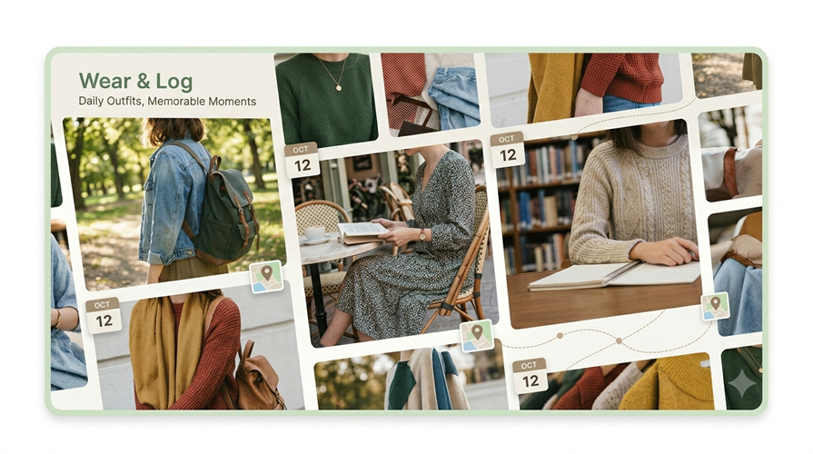

お知らせ
- Wear & Log更新
- Webサイト公開
日々の服装と、その日の出来事（外出先や活動内容）をまとめて掲載するサイトです。 自分が着た服と、それに関連する日常の出来事をセットにして、日付ごとに並べていきます。 いつ、どんな格好で、何をしていたかを後から自分で確認できるようなデータとして残しておくために制作します。

このサイトは、日々の服装と外出先での出来事をまとめたログサイトです。
日々の服装と、その日の出来事（外出先や活動内容）をまとめて掲載するサイトです。 自分が着た服と、それに関連する日常の出来事をセットにして、日付ごとに並べていきます。 いつ、どんな格好で、何をしていたかを後から自分で確認できるようなデータとして残しておくために制作します。